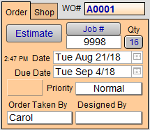
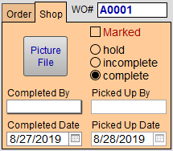

Shop Management Section
An overview of the two tabs in the Shop Management section of the Work Order screen which display the order status. The Work Order screen may be viewed in two ways; the Order Tab and the Shop Tab.
-
Mid-top quadrant of the screen, right of Customer Entry Section
Shop Management Section Explained
Overview of Shop Management
FrameReady automatically creates a sequential WO# (Work Order Number) for each new Work Order. The alpha-character at the start of the number sequence can be changed at the start of each fiscal year to ensure you never run out of numbers and can tell the age of an order just by the letter. See this article.
Clicking on Estimate will change the status of the work order to a quote. Estimates are omitted from the materials ordering stream. When clicked on, the button will change to Activate. When the customer is ready to go ahead with the order, click the Activate button. The creation date will change to the current date.
The creation Date of the Work Order is entered automatically. This indicates the day on which the order was taken.
The Due Date is calculated based on the parameters you set up from the Main Menu. You can over-ride the date by clicking on it. A pop-up calendar will appear. Click on the new date.
The Number of Pieces Due for completion on the above Due Date is shown in the box below the words Due Date. If empty, there are no incomplete orders due that day. When a number is displayed, click on the number in the box for the option to see all of the incomplete orders due that day in a list view. The number will be reduced as orders are changed to Completed in the status field.
The Designed By field is used to track the employee who designed the frame job or the interior designer who brought in the order. The list may be edited.
The Order Taken By field can either be preset in the Main Menu > Work Order > Options to always enter the same name (handy if you are the only person taking orders, see this article.) or let you select a sales clerk from the pop-up menu. This is a required field.
Tip: A report can be generated to show the sales performance of the names entered in this field.
Each Due Date has the option of one of four different Priority ratings (Normal, Promised, Rush, Back Ordered) which are generally used to indicate the time sensitivity of the work order. Orders in the list view can be sorted by Priority using the Sort button available in the List View screen.
The grey number under the Due Date indicates the amount of orders due on same due date as the current work order. The number of orders per day are determined by the parameters you chose on the Main Menu > Set Up Data.
The status of any given Work Order can only be one of the following: Incomplete(default), Hold, Estimate or Complete. Three radio buttons determine the status of the Work Order.
-
The Hold feature is used if you know you have the sale but are not ready to order the supplies, e.g. customer wants spouse to see it, or match the mat to furniture. Switching from Hold to Incomplete does not update the creation date.
-
Incomplete is automatically selected when a new work order is created and indicates that the order has been entered on the computer but has not been assembled yet.
-
Complete indicates that the order has been assembled and no further work is required on the piece. You must manually mark this button. At the same time you return to your computer to mark the job as completed, it is recommended that you record the employee name and completion date. These fields are used in separate reports.
The Picture File stores an unlimited number of digital photos. It may be useful to document a difficult mounting job for future reference or the front and back views of the framing. Photos are imported from your hard drive.
Completed By and Completed Date lets you to record when the work, and by whom the work, was finished. When you select a name in the Completed By field it automatically marks the status radio button to Complete and autofills the Completed Date to the current date, only if it is empty. The Work Order Sales Report is based on these fields.
The Job # field has the special function of batching all Work Orders which have been given the same number. Use this field when Work Orders fall outside of the usual parameters for posting to an Invoice, e.g. orders created on different days for the same customer and you want to post them to one invoice. Do not click the Post to Invoice side bar button until the last order has received its job number.
The grey button beside Job Number displays a list of all previously used Job numbers. Use this feature to determine the next available Job # when a job number is required.
The Order Tab Explained

Work Order Number (WO#)
-
FrameReady automatically creates a sequential WO# (Work Order Number) for each new order.
-
The alpha-character at the start of the number sequence can be changed at the start of each fiscal year to ensure you never run out of numbers and can tell the age of an order just by look at the letter.
-
See also : Closing Off Year End
Estimate Button / Activate Button
-
Use to change the status of the Work Order to a quote.
-
Estimates are omitted from the materials ordering stream.
-
When clicked, the button changes to read Activate. Later, when the customer is ready to go ahead with the order, click the Activate button. FrameReady lists all other Estimates -- for the same customer created on the same date; from there you may Omit any. The creation date changes to the current date.
Job # Button and Field
-
Use to batch all Work Orders which have been given the same number.
-
Use this field when Work Orders fall outside of the usual parameters for posting to an Invoice, e.g. orders created on different days for the same customer and you want to post them to one invoice.
-
Do not click the Post to Invoice sidebar button until the last Work Order has been assigned the Job Number.
Important: Do not use alpha-characters in this field as they will not appear on the index of used job numbers nor can you perform a Find for them. Use 0001,0002, etc.
-
See also: Batching Orders Together with a Job Number.
Qty Button
-
Displays the number of Work Orders assigned to the current Job Number.
-
Click the button to switch to a List View of those Work Orders.
Creation Date Field
-
Entered automatically and indicates the date which the order was taken.
-
Time of creation is also displayed.
Due Date Field
-
Calculated based on the parameters you set up from the Main Menu. You can override the date by clicking on it and selecting a new date from the pop-up calendar.
-
See also: Set up Operations
Number of Pieces Due Field
-
The number of pieces due for completion on the above Due Date.
-
Click for the option to find those Work Orders.
Priority Field
-
Each due date has the option of one of four different Priority ratings (Normal, Promised, Rush, Back Ordered) which are generally used to indicate the time sensitivity of the Work Order. Orders in the list view can be sorted by Priority using the Sortbutton available in the List View screen.
See also: Priority field - Tracking your order by importance -
The grey number indicates the amount of orders due on same due date as the current Work Order. The number of orders per day are determined by the parameters you chose on the Main Menu > Set Up Data.
See also: Set up Operations
Order Taken By Field
-
Can either be preset in the Work Order Options to always enter the same name (handy if you are the only person taking orders) or let you select a sales clerk from the pop-up menu. This is a required field.
-
See also: Set up "Order Taken By" Message
Tip: A report can be generated to show the sales performance of the names entered in this field. See: Sales Performance Report
Designed By Field
-
Use to track the employee who designed the frame job or the interior designer who brought in the order. The list may be edited.
The Shop Tab Explained

Completed By and Completed Date Field
-
Use to record when the work, and by whom the work, was finished. The Work Order Sales Report is based on these fields.
Marked Checkbox
-
Use to mark the Work Order and then, later in List View, use the Find Marked Records button.
Progress States (Hold, Incomplete, Complete)
-
Three radio buttons determine the progress status of the Work Order.
-
The Hold feature is used if you know you have the sale but are not ready to order the supplies, e.g. customer wants spouse to see it, or match the mat to furniture. Switching from Hold to Incomplete does not update the creation date.
-
Incomplete is automatically selected when a new Work Order is created and indicates that the order has been entered on the computer but has not been assembled yet.
-
Complete indicates that the order has been assembled and no further work is required on the piece. You must manually mark this button. At the same time you return to your computer to mark the job as completed, it is recommended that you record the employee name and completion date. These fields are used in separate reports.
See also: Tracking your Work Order completion status
Picked Up By and Picked Up Date Fields
-
Use to record when the work, and by whom the work, was picked up.
Picture File Button
-
Use to store an unlimited number of digital photos. It may be useful to document a difficult mounting job for future reference or the front and back views of the framing. Photos can be imported from your hard drive.
© 2023 Adatasol, Inc.